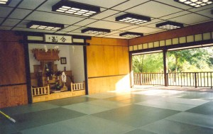
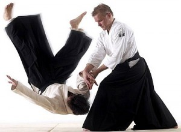

Uyumun Yolu
Prensese birşeyler karalamaya başladığımdan beri, yaşamımın en geniş dilimi olan Aikido üzerine yazmayı istiyordum. Ama düşündükçe derya deniz olan bir konunun neresinden tutsam başka bir yerinden çıktığım için bir türlü toparlayamıyordum. Özünde hayatın her anında varolan bir gerçek olan “Aiki” yi açıklamak çok zor. Anlatılmaz yaşanır deyimi başka hiç birşeye bu kadar tam oturmamıştır herhalde. Ama en azından ona giden yolu kendi penceremden biraz anlatabilirim sanırım.
Nedir bu Aikido? Bu soruyu çok severim. Çünkü bu soru tuzaktaki yemdir aslında. Başına geleceklerden habersiz, öğrenmeye aç arkadaşım sakince yanıma yaklaşır ve bunu sorar. Neden aikido? İşte o anda avını bekleyen bir kaplan gibi, yıllarca eğitilmiş reflekslerimle atılır ve anlatmaya başlarım. Köşeye sıkışan avım, kaçamak sorularla dikkatimi dağıtmaya çalışır. “Greenpeace’cisin, şiddet karşıtısın, ama kılıç diyon savaş sanatı diyon nasıl iş bu? Savaşın sanatı mı olur kardeşim? Hem bu adamlar kendi kendilerini yerden yere atıyolar. Bu aikido kandırmaca şov falan olmasın. Sokakta işe yarar mı ki acaba?” gibi ataklar tarafımca başarıyla savuşturulur ve kişi artık mindere adım atmaya hazırdır. O yüzden ey okur sorunu seç ve gerçekle yüzleşmeye hazır ol, çünkü kalem kılıçtan keskindir.
Öncelikle 3 kelimeden bahsediyoruz aslında. Ai (uyum, birleşme), Ki (ruh, yaşam gücü ya da evrensel enerji) ve Do (yol, sanat, çince tao). Bunlardan başka bir kelime türetiyoruz ve Aiki (yaşamla ya da enerjiyle uyum) diyoruz. Peki bu uyum nasıl oluyor dediğinde ise Aikido (yaşamla uyumun yolu / sanatı) diyoruz. Sadece şu üç kelimenin anlamlarını ve Japonca yazılımları olan kanjilerini incelemeye kalksak apayrı bir yazı çıkar. En basit anlamıyla Aikido, enerjiyi merkezsel ve dairesel hareketler kullanarak yönlendirmeyi, rakibin gücünü kendine karşı kullanmayı sağlayan bir savaş sanatıdır. Aikido teknikleri güce güçle, öfkeye öfkeyle karşılık vermek yerine, çatışmanın içine girerek onu yönlendirmeyi ve çözümlemeyi öğretir. 1900lerin başlarında O’Sensei Morihei Ueshiba tarafından kurulmuş olsa da kökleri yüzyıllar öncesine, samuray okullarına ve Daito Ryu Aikijutsu gibi eski sanatlara dayanır.
Bir japon atasözü der ki “ Duy unut, gör hatırla, yap öğren”. Buna istinaden evde ilk aikido denememizi yaparak başlayabiliriz. Yapalım öğrenelim bölümümüzde bir adet topaç alın, düz bir zemine atarak tek bir nokta üzerinde nasıl hızla döndüğünü görün. İkinci kez atın ve hızla dönerken parmak ucuyla topaça yan yüzeyinden dokunun. Dengeyi kaybedip sağa sola savruldu değil mi? Şimdi topaçı üçüncü kez atın ve bu kez dönerken tam tepesindeki sivri noktadan hafifçe dokunun. Bir süre daha parmağınız altında dönecek, sonra yavaşlayıp duracaktır. Bir yere savrulmadan kontrol altına alınmıştır. Tebrik ederim, çatışmanın merkezini kontrol altına alarak ilk aikido deneyimizi yaşamış oldunuz ve bunu sağa sola savrulan bir insana uygulamak mümkündür.
O'Sensei Morihei Ueshiba
Aikido aslında ruhsal sonuçlar doğuran fikizsel bir çalışmadır. Durumlara göre refleksleri geliştir, böylece fiziksel şiddetten kendini koruyabilirsin. Ama sanıldığı gibi bu nihai hedef değil sadece başlangıçtır. Bu fiziksel çalışmalar, teknikler, izlerken gördüğümüz yerden yere atılmalar, kol bükmeler (başka bir deyişle kendini koruma) amaç değil, yalnızca sistemin araçları, enstrümanlarıdır. Enstrümana hakim olmadan beste yapılamayacağı gibi, tekniklere hakim olmadan da stratejiler kavranılamaz. Yıllar öncesinden gelen, insanların birbirlerini kılıçla öldürebilmeleri için geliştirilmiş teknikler, onların arkasında yatan stratejileri anlamak ve içselleştirmek için sayısız tekrarla çalışılır. Strateji derken çok geniş bir kavramdan bahsediyorum. Öyle ki çağlar ve enstrümanlar değişse de ana fikir hep aynı kalıyor. O yüzden bu yazıda geçen saldırı ve çatışma gibi kelimeleri sadece fiziksel olarak algılamak Aikido’nun nihai hedefini ıskalamak olur. Şiddet çok farklı çeşitlerde, hayatımızın her aşamasında karşımıza çıkabilir ve strateji doğru anlaşıldıysa her seferinde de işe yarar.
Örneğin, onlarca enstrümanın aynı anda uyumla bir besteyi çalmalarını sağlayan besteci de belli bir stratejiyi izler. Onun yaptığı şey sesleri doğru mesafelerle yerleştirmektir. Başka bir deyişle sesler arasındaki boşlukları doğru biçimde sıralamaktır. Anlamsız sesler bütünü, bu boşluklar sayesinde müziğe dönüşür. Davulun vuruşları arasındaki boşluk, kemanla kontrbas arasındaki boşluk, gitarın telleri arasındaki boşluk, notalar arasındaki boşluk… Hepsi sayılmış hesaplanmış ve muhteşem bir uyumla dizilmiştir. Böylece beste ortaya çıkar. Birşarkıdaseslerarasındakiboşluklarısildiğinizidüşününsonuçbirhaylirahatsızediciolacaktır. Diğer taraftan karanlık bir sokakta bir takım kötü adamlarla karşılaşıldığında , ilk hesaplanılan şey yine boşluklardır. Tabi hesaplamak derken düşünmeyi, toplamayı çıkarmayı kastetmiyorum. İçgüdüsel olarak bir anda oluverir bu. Kişiler arasındaki boşluk, ilk adamla aradaki boşluk, yandaki duvarla, gerideki arabayla, yerdeki sopayla aradaki boşluk.. Zihin hızla bu boşlukları sıralandırır ve beden birinden diğerine akar (en büyük boşluk geride kaldıysa, o yöne koşarak uzaklaşılır). Çatışma ya da korunma düşüncesi olmadan, sadece boşlukların ritmini tutarak çatışmanın içinden geçer, onu yönlendirir ve böylece zarar görmez. Aynı şekilde büyük bir ordu da boşlukları hesaplayarak hareket eder. Hatta siyasetçisinden aktivistine kadar herkes bunu yapar ama çoğu zaman farkında olmadan yapar. Yaptığınız şeyin farkında olmaksa işinizi kolaylaştırır. Kaçan kovalanır lafını duyduğunuzda bunun bir savaş sanatı stratejisi örneği olduğunu düşünmemiştiniz. Hiç mi sevgiliyi aramayayım da meraklansın arasın demedin okur. Al sana boşluk stratejisi. Al sana savaş sanatı.
Tüm bu zihinsel ve bedensel gelişimin yanında bu işin en çekici taraflarından bir tanesi ise dojodur. (Dojo: Sanatın pratiğinin yapıldığı yer, “yol”un mekanı) Bir arınma mekanı olan dojoda herşey kurallara bağlıdır, disiplin sıkıdır. Cisimlerden sadeleştirilmiş güzelliğiyle güçlü bir enerjisi olan dojo, Zen’in cisimleşmiş hali gibidir. Gün boyu, sürekli veri bombardımanına tutulmuş beyin dojoya girdiğinde yaşamını ve kendisine dair herşeyi dışarıda bırakır. İlk zamanlarda bu zor olsa da bir süre sonra sihirli bir değnek dokunmuş gibi kendiliğinden gerçekleşir. Günlük karmaşanın içinde bu birçoğumuzun arayıpta bulamadığı bir dinginliktir aslında. Artık insan dojoda geçirdiği saaatler boyunca sanatıyla başbaşadır. Teknikleri uygulayabilmek için zihin sürekli odaklanmış haldedir, çünkü en ufak bir dikkatsizlik acıya ve sakatlanmaya sebep olabilir. Odaklanma kapasitesi mecburen artarken, beden her türlü saldırı karşısında kenara çekilip, üstün pozisyon aldıktan sonra, saldırgana uyum sağlamayı öğrenir. Bunun doğal sonucu olarak saldırıdan kaynaklanan korku, yerini uyum duygusuna bırakır. Artık sadece beden değil, zihin de üstün pozisyondadır.
Birgün dojoda bir antreman izleme şansınız olursa, daha anlaşılır olacaktır. Aikido, izleyen insanlarda her zaman güçlü bir birliktelik, uyum, denge ve estetik duygusu yaratır. Aynen güzel bir besteyi gözleriniz kapalı dinlerken etkilenmeniz gibi birşeydir bu. İki usta aikidocu siyah beyaz kıyafetleriyle adeta yinyang figürünün canlı bir örneğini oluşturarak birleşirler. Saldırı ve savunmanın eriyip birleştiği, iki kişinin rakip olmayı bırakıp bütün olduğu anlarda oluşan farkındalık nihayetinde, öfke ve şiddetle saldıran insanla bile bütün olduğumuz gerçeğini öğretir. Bu anlayış, evrenin kusursuz bütünlüğünü farkına varmaya götüren yolu açar. Zamanla insan özel olmadığını, bunun parçası olduğunu anladığında zihin egonun oyunlarından, tutkularından ve saldırganlığından arınır. Bu felsefi ya da akılsal bir arınma değil içgüdüsel bir dönüşüm olur. O zaman insan gerçekten şiddetsiz ve çevresindeki şiddeti uyuma dönüştürebilme yeteneğine sahip bir bireye dönüşür. Evet aynen o filmlerdeki ak sakallı, sabırlı, sakin üstad gibi…
Biliyorum, evet yine iki satırda hooop diye verdim hayatın anlamını. Bunları bilmek bu kadar basit gerçekten. Ama bunları anlamak ve yaşamaksa tüm bir ömrü dojoda, kendi içsel arayışını sürdürerek geçirmek demek. Benim gibi yolun başında bir öğrencinin yapabileceği ise, hayat boyu sürecek bu yolda, kendini keşfetmenin heyecanını paylaşmaya çabalamaktan öte değil.
Ak sakallı üstad demişken O’Sensei Morihei Ueshiba’yı anmadan olmaz (bu arada O’sensei büyük hoca anlamına gelir). O, Aikido’nun gerçek bir budo olduğunu söyler. Budo kelimesini, batı dillerine savaş sanatı olarak çevirsekte bu bana hep eksik bir çeviri gibi gelmiştir. Japoncadaki kelime anlamı “mızrağı durdurmak” olan Budo savaşçının yolunu, sarsılmaz ruhunu, disiplinini, yaşamını ima eder ve ak sakallı sensei der ki:
“Budo’nun amacı yaşamı uzatmaktır, kısaltmak değil. Budo rakibinizi güçle devirmek ya da dünyayı silahlarla yok oluşa sürüklemek için bir araç değildir. Gerçek Budo evrenin ruhunu kabul etmek, dünya barışını korumak, doğadaki herşeyi doğru bir şekilde üretmek, yetiştirmek ve korumaktır.”
O’Sensei Morihei Ueshiba.


{kind=link}
{kind=link}
{kind=link}
{kind=link}
Aikido’yu anlamak icin omurumun yetmeyecegini sanirim onun uzerine daha cok okuyup daha fazla ogrenemye basladiktan sonra farkettim. Evrende kesvedilecek ve ogenileceklerin sonu yoksa, Aikido da ogrenileceklerin sonunu gormek mumkun degil.
Sensei sizin de benim gibi Sevgili Saoteme Sensein ‘Aikido ve Uyumun Yolu’ adli kitabindan oldukca etkilenmis oldugunuz acik. Gercek anlamda Aikido’yu anlayabilmek,dort tarafimizin nasil Aikido prensipleriyle ve dusunceleriyle cevrili oldugunu gorebilmek icin cok dogru bir kitap.
Saoteme sensei dunyanin yaratilisindaki kurallarla Aikido Tekniginin yaratilisini o kadar guzel bagdastiriyorki o bolumu okuduktan sonra sanki bunu siz kesvetmissiniz gibi hissederek buyuk bir haz duyursunuz.
Bu harika yaziyi prensesle paylasarak okurlarin Aikido’ya olan merakini dahada artidigin ve biz senpailer icin de bulundugun noktadan Aikido’yu nasil gordugunu paylasarak ‘URA'(kolay gorulmeyen) olan bazi parcalarini daha da gorunur kildigin icin tessekkurler.
Etkileyici yazı. Bende hep aikido yapmak istemişimdir. Fakat bulunduğum yerde olmadığı için judoya başladım. Tabii aklım hep aikidoda kaldı. Aikidonun aksine, judonun özünü kaybetmeye başladığını düşünüyorum. Müsabaka odaklı bir eğitim veriliyor. Birçok kısıtlamalar getirilmiş ve hareketler çıkarılmış. Judo elbette çok güzel fakat artık başka bir amaca hizmet ediyor…
Judoka teşekkürler
Eski zamanlarda insanlar binbir mücadele verip bir üstat bulduktan sonra ondan sadece belli bir tekiniği değil, “budo”yu tüm kapsamıyla öğrenirlerdi. Öğrenci değil “deshi” yani izdeş olurlardı. Şimdi ise böyle tam bir hocanın izdeşi olmak o kadar kolay değil. O yüzden her sanatın içindeki ortak noktalara bakıp, parçaları bir araya getirerek yolu keşfetmek her budoka’ya düşen asli görev aslında.
Fikrine katılıyorum, savaş sanatları ve dövüş sporları çok keskin biçimde ayrılmış durumda artık. Ama doğru noktaya baktığımızda hepsinin içinde öğrenecek çok şey var.
Ankara’ya yolun düşerse dojomuza misafir olmaya beklerim. Biraz aikido biraz judo çalışırız.
“Aiki” seninle olsun…
Davetiniz için sağolun. Judo, modern müsabakalara ve olimpiyatlara uymak zordundaydı. Bu da, bir şeylerden feragat etmesi manasına geliyordu. Elbette, judoda hâlâ kendimize katabileceğimiz değişmeyen çok şey mevcut. Fakat anlayış ve içerik değişikliklere uğradı. Dolayısıyla budo felsefesi gözardı edildi. Anavatanından koparılıp başka yere taşınan şeyden hâlâ aynı biçimini koruması beklenemez. Tabii, Türkiye’de birçok isimden örnek vereceğimiz istisnalar mevcut. Aiki sizinle olsun. 🙂